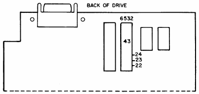

ISSUE 4, 1985 : DISK DRIVE 1
MODEL: SFD 1001
NOTE: There have been a limited number of SFD 1001s sold. This product is NOT covered under our current CONSUMER SERVICE PROGRAM. Therefore, ALL requests for service on these units must be referred back to the SELLER.
However, we have received several requests for information regarding the change of the device number. Since the alteration is not a repair, you may wish to provide your customers with this service.

| This page has been created by Sami Rautiainen. | |
| Read the small print. | Last updated April 06, 2006. |